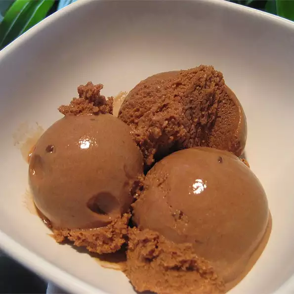

Chocolate Frozen Yogurt

Description
Yogurt is a food produced by bacterial fermentation of milk. The bacteria used to make yogurt are known as yogurt cultures. Fermentation of sugars in the milk by these bacteria produces lactic acid, which acts on milk protein to give yogurt its texture and characteristic tart flavor. Cow's milk is the milk most commonly used to make yogurt. Milk from water buffalo, goats, ewes, mares, camels, and yaks are also used to produce yogurt. The milk used may be homogenized or not. It may be pasteurized or raw. Each type of milk produces substantially different results.
Ingredients
- ¾ cup white sugar
- 2 teaspoons cornstarch
- 1 (12 fluid ounce) can fat-free evaporated milk
- ½ cup semisweet chocolate chips
- 1 cup plain low-fat yogurt
- 1 teaspoon vanilla extract
Steps
- Stir together the cornstarch and sugar, and place in a saucepan. Stir in the evaporated milk, and chocolate chips. Cook over medium heat until chocolate is melted and the mixture is thickened. Stir constantly to prevent burning.
- Remove the mixture from the heat, and stir in the plain yogurt and vanilla. Refrigerate until chilled.
- Pour the mixture into an ice cream maker, and freeze according to the manufacturer's instructions.